This report covers SAENAL Market's sales performance from July 2021 through July 2024. Earlier versions of the report covered annual and monthly revenue decomposition, category performance, discount-segment revenue, and a SARIMA revenue forecast. This version also documents four analyses from the same internship work, re-run from the source exports: a SKU-level RFM segmentation of the product catalog, a revenue-based growth-share matrix for categories (a proxy, since there is no cost or margin data), a head-to-head SARIMA vs. Prophet forecast comparison, and a quantified vendor concentration check using HHI and CR4 instead of a listing-count chart.
Five things stand out from the data:
| Finding | Analysis & Implication |
|---|---|
| Peak Year | 2022 revenue (sales-ledger basis, indexed to 2021 = 100) hit an index of ~480, the highest in the dataset. 2023 dropped 10.6% to an index of ~428. 2024's partial year (Jan–Jul) is at an index of ~303, which annualizes to roughly 493–521. (Index basis: total 2021 sales-ledger revenue, July–December, = 100.) |
| Category Leaders | 건강 and 건강식품 together account for about 62% of 2023 category-level revenue. Both are confirmed Stars in the growth-share matrix once a preprocessing bug that had misclassified a large chunk of revenue as "Unknown" was fixed. |
| SKU Portfolio (RFM) | 250 "Star Performer" SKUs (12% of the catalog) generate 51.4% of revenue. 196 "Declining Stars" (9% of the catalog, 23.3% of historical revenue) were last recorded in the 2021 or 2022 snapshot and don't appear in 2023 or 2024. |
| Vendor Concentration | HHI on a revenue basis is 997 and has been climbing since 2022 (633 → 1,928 by 2024). The top vendor, Vendor A, holds just over a fifth of platform revenue and more than three-quarters of the 건강식품 category. |
| Forecast Model Choice | SARIMA(1,1,1)(1,1,1,12) beats Prophet on held-out MAE, RMSE, and MAPE (23.9% vs. 41.0%). SARIMA was selected for the final 12-month forecast. |
| Discount-Eligibility Mix | Member-discount-eligible products generate about 3.2x the revenue of non-discountable products. This is a product-level label, so it can't measure membership ROI. |
SAENAL Market operates in the increasingly competitive Korean online food and health marketplace. This report turns three-plus years of transactional exports into things a small analytics team can actually act on. Earlier versions of the report were organized around the first four questions below. The internship analysis also took on four more, which this version documents in full:
The dataset spans July 2021 through July 2024 and comes from three source tables: a daily sales ledger (order count, revenue, refunds, no customer identifier), a yearly product-performance snapshot (per-SKU orders, revenue, refund rate, one file per year), and a product/category master list. There's no customer ID anywhere in the export.
| Table | Grain | Key fields | Used for |
|---|---|---|---|
| Daily sales ledger | 1 row / day | order count, revenue, refunds | Revenue trend, seasonality, SARIMA/Prophet forecast (Sections 5, 10) |
| Yearly product snapshot | 1 row / product / year | orders, revenue, refund rate, avg. price | Category, vendor, RFM, correlation analysis (Sections 6, 7, 8, 9) |
| Product/category master | 1 row / SKU | category ID, discount eligibility | Category and discount-segment labeling |
The sales-ledger revenue total and the product-snapshot revenue total don't reconcile to the same figure for a given year, since they come from different exports with different scope. This report follows the same convention as the original: the sales ledger is used for revenue trend and forecasting figures, and the product snapshot is used for category, vendor, and SKU-level shares. Shares within each table are internally consistent even though the two totals differ.
Preprocessing already involved a few judgment calls documented previously: product-name standardization, bracket-pattern company extraction (recovering most missing vendor fields), and removing three deprecated category codes. Re-running the analyses for this version surfaced two more issues that hadn't been caught before, so both are fixed here, upstream of everything else in this report.
Category, Company, and Discount Target all carry a trailing
non-breaking space inherited from the Excel export. This didn't break the earlier groupby()
aggregations, since every row for a given label carried the same hidden character, but it silently breaks
any exact-match filter. It's stripped here before it can affect the vendor-matching logic in Section 9.
The bracket-extraction regex pulled the entire promotional campaign text out of a milestone SKU name (a one-day sales-milestone event name, formatted the same way as a vendor tag) and treated it as a separate vendor. That one mislabeled bucket carried revenue equal to roughly three-quarters of 건강식품's entire 2023 category revenue, enough to change who the #1 vendor is by revenue. It's folded back into the real vendor, Vendor A, before the concentration analysis in Section 9.
Fixing 4.2 had a knock-on effect worth calling out directly. The same mislabeled SKU had also failed to
match the product master list on Category, so a large chunk of its revenue had landed in the
catch-all Unknown bucket instead of its real category. Once the vendor label was corrected, the
category-fill logic assigned it correctly to 건강식품, since that's what the rest of Vendor A's catalog is
categorized as.
Worth remembering for future data pulls: any regex-based field derivation should be spot checked against the size of the "Unknown" bucket before trusting category-level comparisons. One mislabeled high-revenue SKU moved a category's growth rate by more than 70 points.
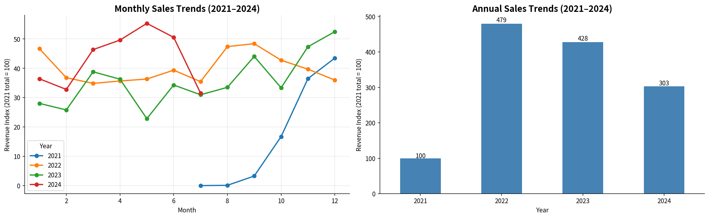
| Year | Revenue Index (2021 = 100) | Coverage | Annualized Estimate |
|---|---|---|---|
| 2021 | 100 | Jul–Dec (6 mo) | ~200 |
| 2022 | 479 | Full Year | 479 (actual peak) |
| 2023 | 428 | Full Year | 428 (−10.6% YoY) |
| 2024 | 303 | Jan–Jul (7 mo, partial) | ~493–521 annualized |
How the index is built: every revenue figure in this public version is divided by total 2021 sales-ledger revenue (July–December 2021) and multiplied by 100. Monthly charts use the same base, so a month at 50 means half of 2021's six-month total. Category, product, and pairplot figures divide product-snapshot revenue by the same base. Product prices in the pairplot use a separate index (median product price = 100). Percent shares and growth rates are computed on the underlying values and are the same as in the internal version.
2022's peak is followed by a real but modest 2023 contraction, not a collapse. 2024's partial-year pace points toward a recovery near or above the 2022 peak if the usual H2 seasonal pattern holds. The SARIMA forecast in Section 10.3 is more cautious than this simple annualization.
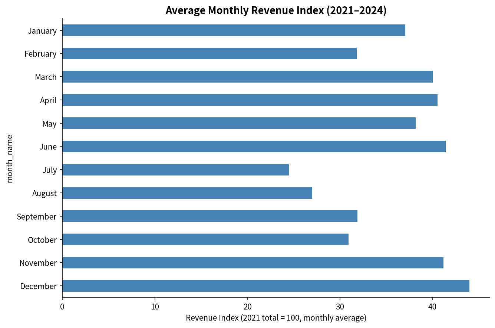
December, June, and November have the highest all-years averages in Figure 2. The July and August lows need a caveat: those averages include the near-zero 2021 launch months and the partial July 2024. On complete post-launch months only, July averages about 25% below December, and August sits slightly above the overall monthly average. With only two or three complete observations per calendar month, the seasonal pattern is suggestive rather than settled.
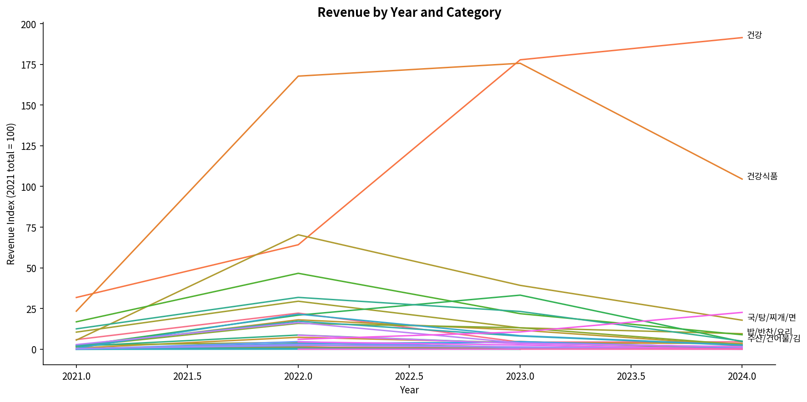
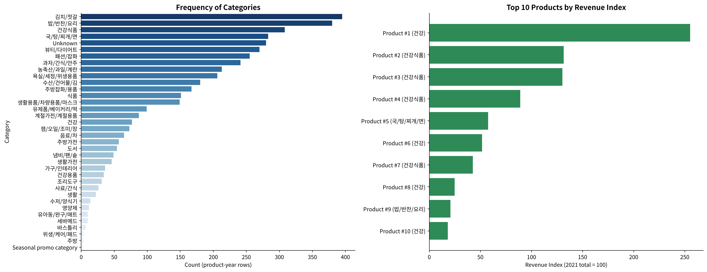
SAENAL Market doesn't capture COGS or margin at the product level, so a true profitability matrix isn't possible here. Instead, this builds a revenue-only, BCG-style growth-share matrix: YoY revenue growth (2022→2023, the two full calendar years available) plotted against revenue share of the platform, with bubble size showing order volume. 'Unknown' is excluded as a data artifact rather than a real category. The matrix shows where revenue grew or shrank, not which categories are profitable.
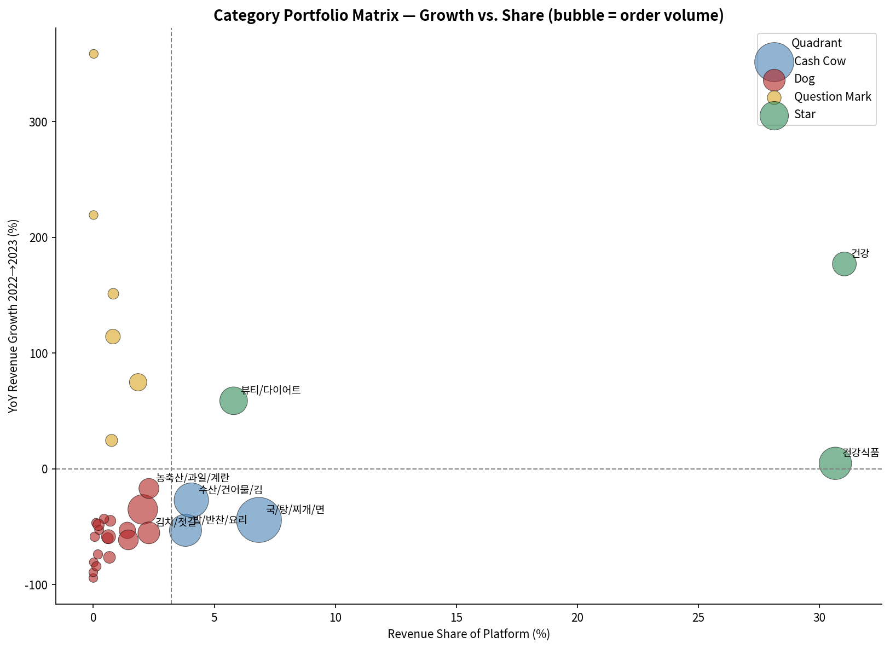
| Category | YoY Growth | Share of Category Revenue | Quadrant |
|---|---|---|---|
| 건강 | +177.0% | 31.0% | Star |
| 건강식품 | +4.7% | 30.7% | Star |
| 국/탕/찌개/면 | −44.2% | 6.8% | Cash Cow |
| 뷰티/다이어트 | +58.8% | 5.8% | Star |
| 수산/건어물/김 | −27.1% | 4.0% | Cash Cow |
| 밥/반찬/요리 | −53.2% | 3.8% | Cash Cow |
| 식품 | +74.8% | 1.9% | Question Mark |
Reading it: 건강 and 건강식품 together make up 61.7% of category-level revenue and both are Stars. 건강's revenue grew strongly and 건강식품's was roughly flat between 2022 and 2023; one year of growth data can't show whether demand is close to saturation. It also means the vendor concentration in Section 9 and this category concentration compound each other. A few staple categories (국/탕/찌개/면, 밥/반찬/요리, 수산/건어물/김) land in the Cash Cow quadrant: above-average revenue share, but revenue down 27–53% year over year, so the label here means "large and shrinking," not stable. Still worth defending, but not where new investment should go.
Adapted to the SKU level since there's no customer ID (Section 3): Recency is the number of years between the latest snapshot year (2024) and the last yearly product snapshot in which the product appears, Frequency is total order count, and Monetary is total revenue. Recency is scored from that year gap (same year = 5, one year = 3, two years = 2, three years = 1); Frequency and Monetary are scored 1–5 by quintile rank. The three scores are combined into six portfolio segments. Products are keyed by product name, so a renamed listing shows up as a separate product.
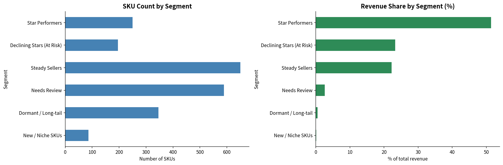
| Segment | SKUs | Revenue Share | Interpretation |
|---|---|---|---|
| Star Performers | 250 (12%) | 51.4% | Core catalog. Protect availability and pricing. |
| Declining Stars (At Risk) | 196 (9%) | 23.3% | Historically high revenue, absent from the 2023–2024 snapshots. Could be delisted, renamed, out of stock, or losing placement. |
| Steady Sellers | 650 (31%) | 22.2% | Reliable mid-tier catalog depth. |
| Needs Review | 589 (28%) | 2.6% | Mixed signals, not urgent. |
| Dormant / Long-tail | 346 (16%) | 0.5% | Low on everything. Candidates for delisting. |
| New / Niche SKUs | 86 (4%) | 0.1% | Recently active, low volume, too early to judge. |
The Declining Stars segment is probably the most useful output of this whole exercise: 196 SKUs that used to generate real revenue, 23.3% of the portfolio's historical total, don't appear in the 2023 or 2024 product snapshots (174 were last recorded in 2022, 22 in 2021). The snapshots don't confirm that these products stopped selling, or why. Before assuming demand just disappeared, it's worth checking whether they were renamed, delisted, out of stock, or lost search placement. Reactivating even a third of this segment would likely move the needle more than most new product launches.
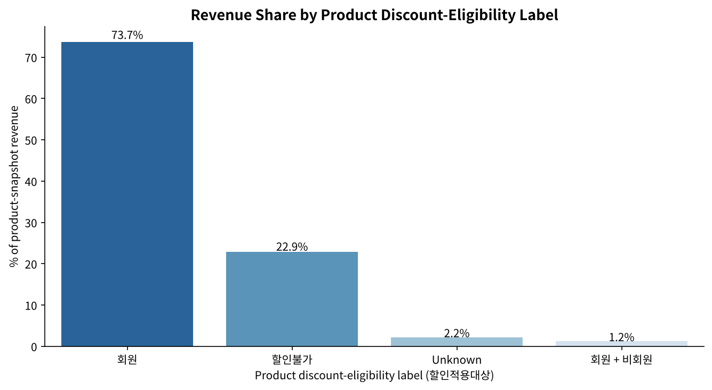
| Label (할인적용대상) | Share of Revenue | What the label means |
|---|---|---|
| 회원 | 73.7% | Product carries a member discount. |
| 할인불가 | 22.9% | Product is not discountable (also the fill value when the master list left this field blank). |
| Unknown | 2.2% | Product not matched to the master list. |
| 회원 + 비회원 | 1.2% | Discount applies to members and non-members. |
Discount Target comes from the product master list (할인적용대상), so it describes products,
not customers; where it was missing, it was filled with the vendor's most common label. The split shows that
products carrying a member discount account for about 3.2x the revenue of non-discountable products. It
doesn't show how member customers buy compared with non-members, so it can't be used to estimate the
loyalty program's return or the value of converting non-members. That would need customer-level order data,
which this export doesn't contain (Section 3). The earlier 5–6x member multiplier and the conversion-value
estimate rested on reading this product label as customer membership, so both are withdrawn here.
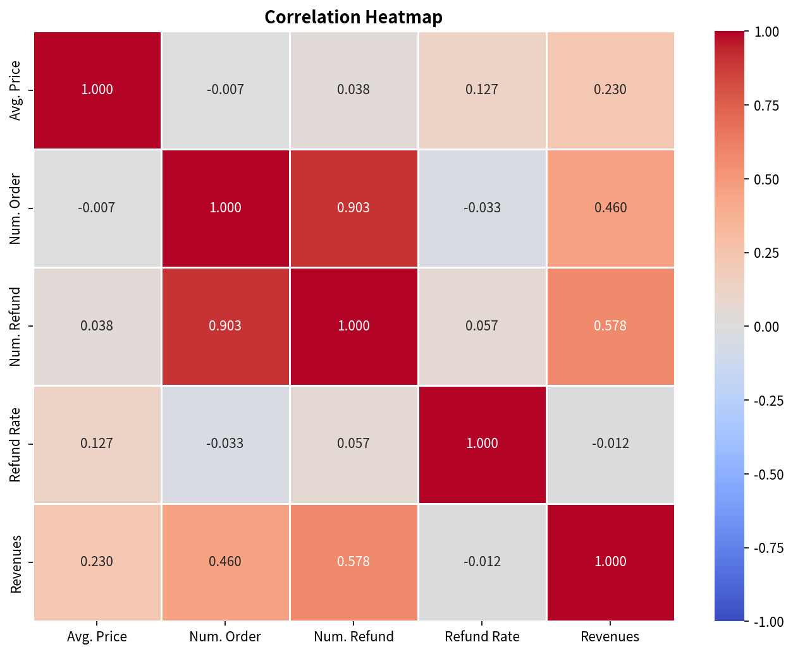
| Variable Pair | r | Interpretation |
|---|---|---|
| Num. Order → Revenue | 0.46 | Moderate positive association: products with more orders tend to have higher revenue, though the relationship is far from one-to-one. |
| Refund Rate → Revenue | −0.01 | Effectively no linear association between a product's refund rate and its revenue. This doesn't show how refunds affect customer behavior. |
| Avg. Price → Revenue | 0.23 | Weak positive association between average price and product revenue. A correlation across products can't show how a price change would affect sales. |
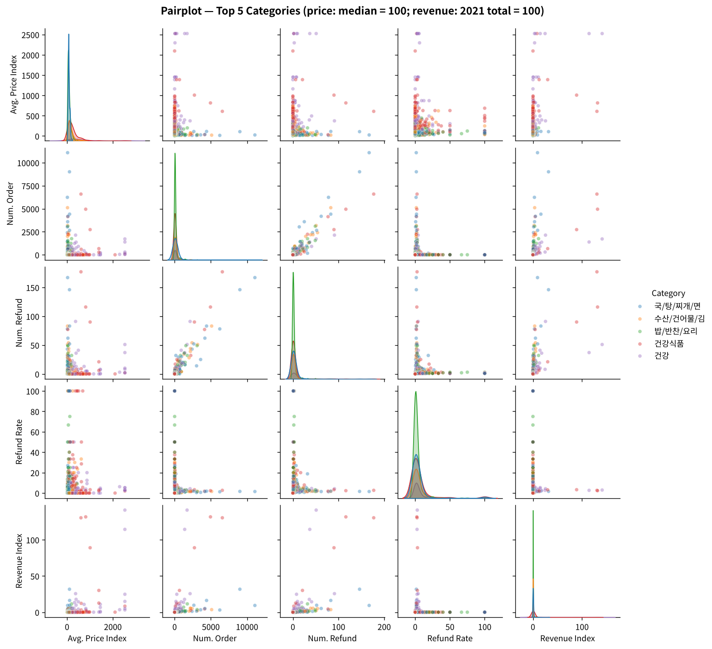
The original report flagged vendor risk using a listing-frequency chart: Vendor B had far more rows than anyone else across the four yearly snapshots. That metric mixes up a vendor's tenure (how many years it's been listed) with its actual economic weight (how much revenue depends on it). A vendor listed every year racks up rows regardless of how much it actually sells. This section replaces that read with the Herfindahl–Hirschman Index (HHI) and top-4 concentration ratio (CR4), computed on four different bases.
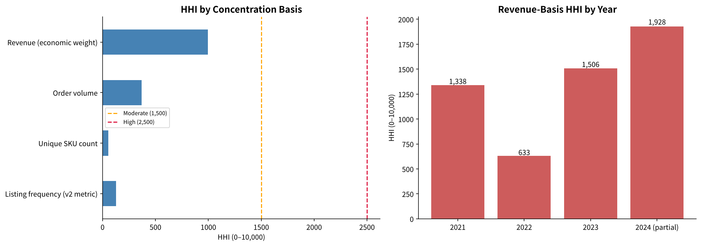
| Basis | Top-Vendor Share | HHI | CR4 | Read |
|---|---|---|---|---|
| Listing frequency (v2 metric) | <10% | 128 | 16.1% | Looks competitive, but measures tenure, not weight. |
| Unique SKU count | <5% | 56 | 10.8% | Even more diffuse. No single vendor dominates by SKU count. |
| Order volume | ~15% | 368 | 30.3% | More concentrated than SKU count would suggest. |
| Revenue (economic weight) | >20% | 997 | 53.8% | The metric that actually matters for supply risk. |
Vendor A is the platform's largest vendor by revenue at just over a fifth of the total, above the 20% single-vendor exposure cap proposed in this report (an internal planning threshold, not an external standard), and it holds more than three-quarters of the 건강식품 category's revenue. If Vendor A exits, renegotiates unfavorably, or runs into a supply disruption, that share of platform revenue is directly exposed through one vendor relationship, concentrated in one of the two largest categories. That's a meaningfully different risk picture than the original listing-count chart implied.
| Year | HHI (revenue basis) | CR4 |
|---|---|---|
| 2021 | 1,338 | 65.6% |
| 2022 | 633 | 38.2% |
| 2023 | 1,506 | 61.9% |
| 2024 (partial) | 1,928 | 69.8% |
Concentration eased in 2022 as the active vendor base expanded roughly fivefold. In 2023 HHI rose again while the active-vendor count stayed at a similar level, which points to revenue consolidating onto fewer, larger suppliers rather than the catalog genuinely diversifying. The 2024 figure comes from a partial-year snapshot with well under half as many active vendors, so part of its rise may reflect the shorter window rather than a change in the supplier base. This is worth checking quarterly rather than treating as a one-time finding.
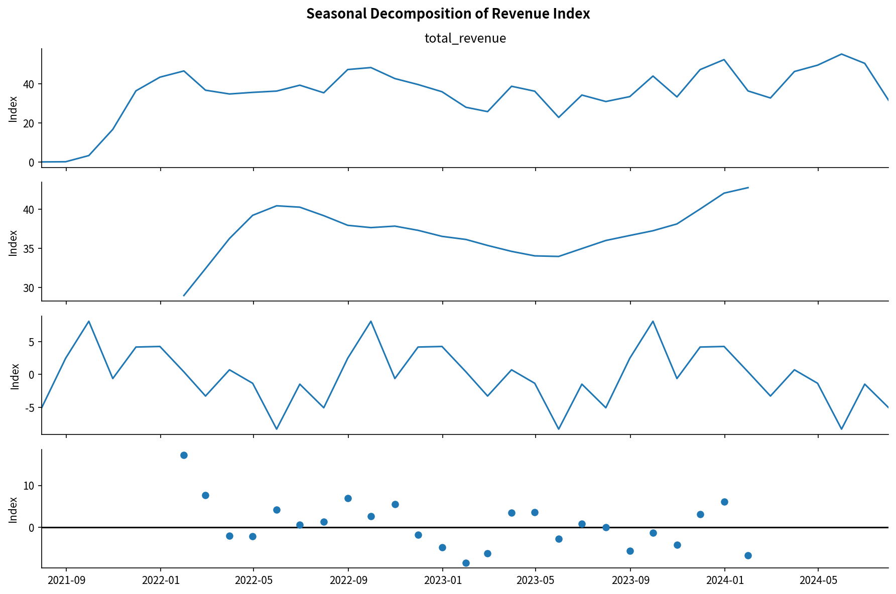
Before settling on a single forecasting approach, SARIMA is benchmarked against Facebook Prophet on a proper held-out test. The last 6 full months are excluded from training, both models forecast that window, and accuracy is scored on MAE, RMSE, and MAPE. The most recent month (2024-07) is excluded from both train and test because the underlying export was pulled mid-month, so it's a partial month rather than a genuine data point. Both models were trained on the same window (July 2021–December 2023, 30 months) and scored on the same six months (January–June 2024). SARIMA was fit with stationarity and invertibility constraints turned off; Prophet used yearly seasonality only. This is a single train/test split, not cross-validation, so the gap rests on six test months.
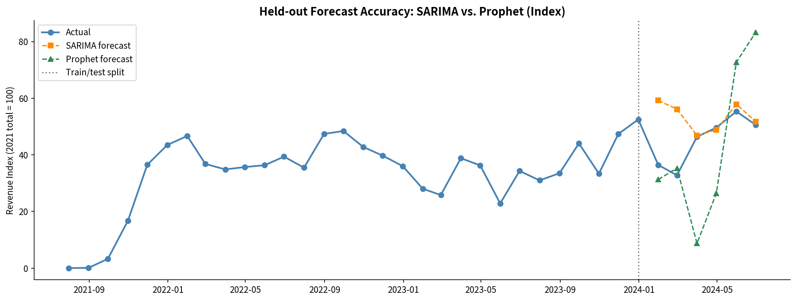
| Model | MAE (index) | RMSE (index) | MAPE |
|---|---|---|---|
| SARIMA(1,1,1)(1,1,1,12) | 8.5 | 13.4 | 23.9% |
| Prophet | 19.8 | 23.7 | 41.0% |
MAE/RMSE are shown on the same revenue-index scale as the charts (2021 total = 100), not in currency, so only the relative gap between models matters here.
SARIMA wins on all three metrics. With only about 2.5 years of training history and a strong, regular 12-month cycle, its explicit seasonal order captures the pattern more reliably than Prophet's changepoint-based trend model, which tends to need more history before its flexibility pays off. On this holdout, the result supports choosing SARIMA over Prophet given how much data is available and how regular the seasonality is.
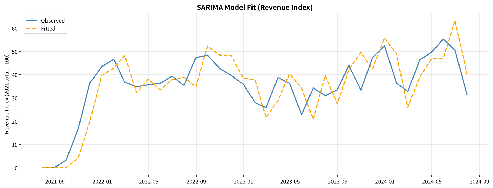
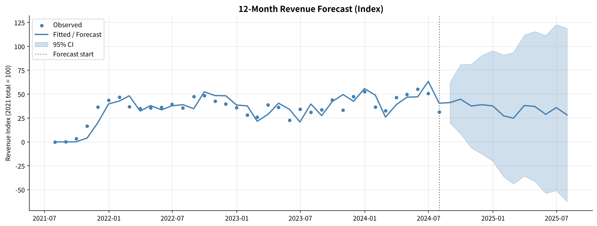
The final model differs from the benchmark setup in two ways: it was refit on all 37 monthly points, including the partial July 2024 month that Section 10.2 excludes, and with default SARIMAX settings rather than the unconstrained ones used in the benchmark. The 23.9% MAPE describes the benchmark configuration, not this exact model.
The saved forecast covers August 2024 through July 2025. Point forecasts range from an index of about 25 (February 2025) to 45 (September 2024) per month, below the 46–55 observed in March–June 2024; the partial July 2024 value at the end of the training series may be pulling the level down. The 95% interval is wide from the start, and its lower bound falls below zero from October 2024 onward, so the forecast works as a rough baseline rather than a planning number. Quarterly recalibration, on complete months only, is still the right approach.
| Finding | Quantified Insight |
|---|---|
| Revenue Trajectory | 2022 peak (index 479 vs. 2021 = 100), 2023 contraction (−10.6%), 2024 recovery pace of roughly index 493–521 annualized. |
| Seasonality | December, June, and November have the highest monthly averages. On complete post-launch months, July runs about 25% below December; the larger gap in Figure 2 is inflated by the 2021 launch months and the partial July 2024. |
| Category Concentration | 건강 + 건강식품 make up 61.7% of 2023 category revenue, both in the Star quadrant after the data fix (revenue basis only, not profitability). |
| SKU Portfolio | 12% of SKUs generate 51% of revenue. A 196-SKU "Declining Stars" segment (23% of historical revenue) needs a stock/placement check. |
| Vendor Concentration | Revenue-basis HHI of 997, rising since 2022. The top vendor exceeds the 20% exposure cap proposed in this report platform-wide and holds more than three-quarters of one category. |
| Forecast Model | SARIMA MAPE of 23.9% vs. Prophet's 41.0% on held-out data (Jan–Jun 2024). SARIMA selected for the final forecast. |
| Discount-Eligibility Mix | Member-discount-eligible products generate about 3.2x the revenue of non-discountable products. A product-level label, so no membership ROI or conversion value can be estimated from it. |
| Price–Revenue Correlation | r=0.23 between average price and product revenue, a weak association. It doesn't identify what drives purchases or how price changes would affect revenue. |
All seven recommendations were proposed during the internship, ordered by estimated impact times feasibility as judged at the time. Items 1 through 3 and 6 also appeared in earlier versions of this report; 4, 5, and 7 come from the RFM, vendor-concentration, and forecast-comparison work and are written up in full here. Whether any of them were implemented, and what effect they had on revenue or operations, is not known, so the impact language below describes expected value at the time, not results.
Target converting 15%+ of non-member purchasers to membership within 12 months, using a 30-day free trial, a real-time savings calculator at checkout, and a referral program. Section 7's data can't size this opportunity, since it labels products rather than customers; validating it would need customer-level purchase data.
Both categories sit in the Star quadrant on a revenue basis. Onboard 3–5 new health-supplement brands per quarter and develop cross-category bundles.
Pre-allocate budget to June, November, and December. Run summer-specific counter-programming, cooling foods and electrolyte-type SKUs, for the July–August trough.
196 SKUs holding 23.3% of the portfolio's historical revenue don't appear in the 2023 or 2024 product snapshots. Before writing this off as normal churn, check stock levels, search placement, and pricing for this specific list. It's a bounded, prioritized task rather than a vague "reduce the long tail" initiative.
Vendor A holds more than three-quarters of 건강식품 category revenue and just over a fifth of platform revenue, both above the 20% cap proposed here (an internal planning threshold, not an external standard). Start qualifying a second supplier for 건강식품's top SKUs before this becomes a single point of failure, especially since the category is one of the two Stars carrying platform growth.
Mandate membership capture at checkout and standardized product naming at vendor onboarding. Section 4 of this report shows a single bracket-extraction bug moved a chunk of revenue equal to about three-quarters of one category's annual total into the wrong category. An automated check that flags when the "Unknown" bucket exceeds a threshold share of any metric would catch this kind of thing earlier.
Section 10 confirms SARIMA over Prophet given this dataset's length and seasonality. As more 2024–2025 data comes in, the same held-out benchmark should be re-run each quarter, since Prophet's disadvantage may narrow with more training history and the model choice shouldn't be treated as permanent.
SAENAL Market's sales data tells a fairly coherent story: two structurally strong health categories, a member-discount product range that carries most of the revenue, and a seasonal demand cycle that's still underused as a planning input. This version sharpens that picture in two ways. First, both the product portfolio and the vendor base turn out to be more concentrated than the original qualitative charts suggested, a Pareto curve where 12% of SKUs drive 51% of revenue, and a top vendor above the 20% exposure cap proposed here. Second, it shows that a single upstream data-quality bug can flip a category's growth story from declining to stable, which is a good reminder to sanity-check the "Unknown" bucket before presenting category-level comparisons as findings.
Accelerating loyalty program enrollment was ranked the top priority at the time, though this data can't size its impact (Section 7). The Declining Stars SKU segment and the Vendor A exposure were the most immediately actionable of the internship findings, since both come with a specific, bounded list to act on rather than a general directional recommendation.